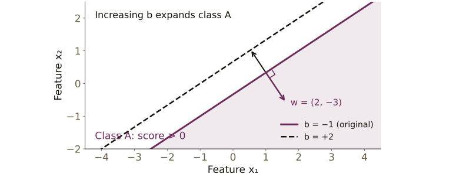
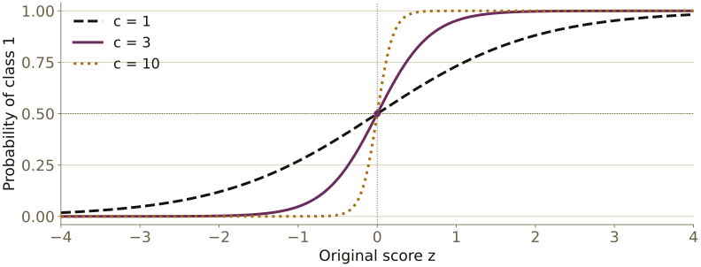
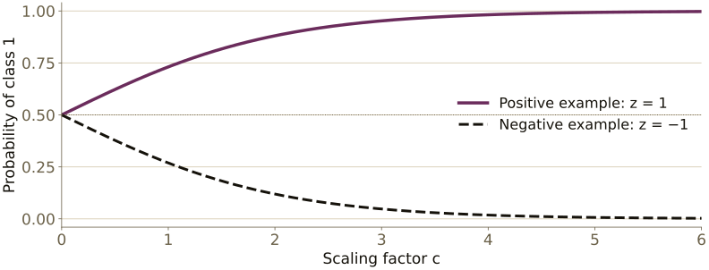

Written answers · Question 1a
Classifier predictions
We assign an observation to class A when $z(\mathbf{x})=-1+2x_1-3x_2>0$.
$z(1,1)=-1+2-3=-2$
Both scores are negative, so neither observation is assigned to class A .
The classification rule uses a strict inequality. A score of zero lies on the boundary and is not assigned to class A under this rule.
Written answers · Question 1b–d
Decision boundary
To find the decision boundary, we set the score to $z=0$.
$-1+2x_1-3x_2=0\quad\Longrightarrow\quad x_2=\frac{2}{3}x_1-\frac{1}{3}$
The weight vector $\mathbf{w}=(2,-3)$ is normal to the boundary and points towards increasing scores.
If we increase $b$ while keeping the weights fixed, the boundary moves along $-\mathbf{w}$ and the class A region expands.
For fixed nonzero weights, the signed position of the boundary along the weight direction is -b divided by the norm of w. Changing the bias therefore shifts the boundary without changing its slope.
Written answers · Question 1b–d · geometry
Effect of the bias

Here we keep the weights fixed and increase $b$. Every score increases, so more observations satisfy $z>0$. The shaded region is class A when b=-1. The dashed boundary uses b=2. To remain on the boundary after adding 3 to b, we move by -3w/||w||². Increasing b changes the position of the line. Multiplying both w and b by the same positive constant leaves the line in place. The axes use equal scales so that the normal vector is perpendicular to the line in the drawing.
Written answers · Question 2a
Confusion matrix
There are 1,000 components; positive means defective.
Actual ↓ Defective (+) Non-defective (−) Defective (+) 12 TP · true positive 8 FN · false negative Non-defective (−) 30 FP · false positive 950 TN · true negative
We place actual labels in rows and predicted labels in columns. There are 20 defective components, with 12 detected and 8 missed. Of the 980 non-defective components, 30 are incorrectly flagged, leaving 950 true negatives. These counts are used in the following metric calculations.
Written answers · Question 2b–c · accuracy
Accuracy
$\displaystyle\frac{\textcolor{#4A6A2E}{TP}+\textcolor{#2C4A7A}{TN}}{\textcolor{#4A6A2E}{TP}+\textcolor{#2C4A7A}{TN}+\textcolor{#A67012}{FP}+\textcolor{#A82A20}{FN}}$
To calculate accuracy, we divide the correct predictions by all predictions .
TP · true positive TN · true negative FP · false positive FN · false negative
Always predicting non-defective gives $980/1000=98\%$ accuracy, although it detects no defects.
There are 1,000 components; positive means defective.
Actual ↓ Defective (+) Non-defective (−) Defective (+) 12 TP 8 FN Non-defective (−) 30 FP 950 TN
We use the diagonal for the numerator and all four cells for the denominator.
Substituting the counts gives
$\displaystyle\frac{\textcolor{#4A6A2E}{12}+\textcolor{#2C4A7A}{950}}{\textcolor{#4A6A2E}{12}+\textcolor{#2C4A7A}{950}+\textcolor{#A67012}{30}+\textcolor{#A82A20}{8}}=\frac{962}{1000}=96.2\%$
The green true-positive and blue true-negative cells contain the correct predictions. We add these for the numerator, then divide by the total number of components. The actual non-defective row contains 30+950=980 components. This is why a classifier that always predicts non-defective achieves 98% accuracy without detecting a defect.
Written answers · Question 2b · precision
Precision
$\displaystyle\frac{\textcolor{#4A6A2E}{TP}}{\textcolor{#4A6A2E}{TP}+\textcolor{#A67012}{FP}}$
Precision is the proportion of flagged components that are actually defective .
TP · true positive TN · true negative FP · false positive FN · false negative
The classifier flags 42 components. Of these, 12 are defective and 30 are false alarms.
There are 1,000 components; positive means defective.
Actual ↓ Defective (+) Non-defective (−) Defective (+) 12 TP 8 FN Non-defective (−) 30 FP 950 TN
We use the predicted-defective column, which contains TP + FP.
Substituting the counts gives
$\displaystyle\frac{\textcolor{#4A6A2E}{12}}{\textcolor{#4A6A2E}{12}+\textcolor{#A67012}{30}}=\frac{12}{42}\approx28.6\%$
For precision, we start with the components predicted to be defective and ask how many predictions were correct. This selects the predicted-defective column. Twelve of the 42 flags are correct, giving about 28.6% precision. FN and TN are shown for context but do not enter the calculation. Precision is undefined if there are no predicted positives.
Written answers · Question 2b–c · recall
Recall
$\displaystyle\frac{\textcolor{#4A6A2E}{TP}}{\textcolor{#4A6A2E}{TP}+\textcolor{#A82A20}{FN}}$
Recall is the proportion of actual defects that the classifier detects .
TP · true positive TN · true negative FP · false positive FN · false negative
The classifier detects 12 of the 20 defects and misses 8. Always predicting non-defective gives 0% recall.
There are 1,000 components; positive means defective.
Actual ↓ Defective (+) Non-defective (−) Defective (+) 12 TP 8 FN Non-defective (−) 30 FP 950 TN
We use the actual-defective row, which contains TP + FN.
Substituting the counts gives
$\displaystyle\frac{\textcolor{#4A6A2E}{12}}{\textcolor{#4A6A2E}{12}+\textcolor{#A82A20}{8}}=\frac{12}{20}=60\%$
For recall, we start with the components that are actually defective and ask how many were detected. This selects the actual-defective row. We detect 12/20=60% and miss 8/20=40%. FP and TN do not enter the calculation. Recall is undefined if there are no actual positives. In this question there are 20, so the always-negative classifier has zero recall.
Written answers · Question 2d–e
Class imbalance
Only 20 of the 1,000 components are defective (2%) . A classifier that always predicts non-defective therefore achieves 98% accuracy while missing every defect. Most of its correct predictions come from the larger non-defective class.
The classifier in the question has lower accuracy, 96.2% , but detects 12 of the 20 defects , giving 60% recall . It therefore detects defects that the always-negative classifier misses.
If allowing a defective component through is particularly dangerous, we would prioritise recall . The aim is to reduce the 8 false negatives
We should also consider false alarms. Only 12 of the 42 flags are real defects (28.6% precision ), so the 30 false positives
Class imbalance means that the classes occur at different frequencies. Here there are 980 non-defective components and only 20 defective components. Accuracy counts each observation equally, so correct predictions for the larger class can hide missed defects. Prioritising recall gives greater importance to detecting those defects, while precision helps us assess the resulting inspection workload. An always-positive rule catches all 20 defects but also flags all 980 non-defective components. Its precision is therefore 20/1000=2%. We would choose a decision threshold using the costs of missed defects and false alarms, together with the available inspection capacity.
Written answers · Question 3a
Predicted probability
$P(y=1\mid\mathbf x)=\sigma(\mathbf w^T\mathbf x+b)$
We first calculate the score $z=\mathbf w^T\mathbf x+b$. The sigmoid turns this score into a probability for class 1.
We assume the model correctly separates the training data: $z>0$ for class 1 and $z<0$ for class 0.
The predicted class is determined using a probability threshold of 0.5. Strict separation means no training observation lies on the boundary. We assume that both classes occur in training.
Written answers · Question 3a
Scale the weights and bias
$p_c=\sigma\!\left((c\mathbf w)^T\mathbf x+cb\right)$
We multiply both the weights and the bias by the same constant $c>1$.
$(c\mathbf w)^T\mathbf x+cb=c(\mathbf w^T\mathbf x+b)=cz$
So the new probability is $p_c=\sigma(cz)$. The whole score is multiplied by $c$.
We scale the bias as well as the weights. Scaling only the weights would generally move the zero-score boundary. Here c=1 recovers the original model.
Written answers · Question 3a
Expand the sigmoid
$\sigma(u)=\dfrac{1}{1+e^{-u}}$
Substituting the scaled score gives
$\displaystyle p_c=\sigma(cz)=\frac{1}{1+e^{-cz}}$
Changing $c$ changes the exponent. This is how scaling the parameters changes the probability.
We use cz for the scaled score from here on. The minus sign in the exponent applies to this whole score.
Written answers · Question 3a
Shape of the sigmoid

All curves pass through $p_c=0.5$ at $z=0$. Increasing $c$ makes the probability closer to 1 for positive scores and closer to 0 for negative scores. The horizontal axis is the original score z. Each curve shows sigma(cz). Scaling makes the sigmoid steeper around the same zero-score boundary.
Written answers · Question 3a
Positive score example
Take an observation with original score $z=1$. With $c=3$, its scaled score is $cz=3$.
$\displaystyle c=1:\quad p_1=\frac{1}{1+e^{-1}}\approx0.7311$
The exponential decreases from $e^{-1}\approx0.3679$ to $e^{-3}\approx0.0498$, so the denominator gets closer to 1.
The predicted class remains 1. The probability assigned to that class increases because the denominator falls from about 1.3679 to 1.0498.
Written answers · Question 3a
Negative score example
Now take an observation with original score $z=-1$. With $c=3$, its scaled score is $cz=-3$.
$\displaystyle c=1:\quad p_1=\frac{1}{1+e^1}\approx0.2689$
The exponential increases from $e^1\approx2.7183$ to $e^3\approx20.0855$. The denominator grows, so the probability of class 1 decreases.
The predicted class remains 0. Its probability is 1-p_c, which increases from about 0.7311 to 0.9526. Increasing c makes a negative score more negative; it does not make its numerical value larger.
Written answers · Question 3b
Take the probability limit
$p_c=\dfrac{1}{1+e^{-cz}}$
Start with the sigmoid from part a. As $c\to\infty$, the result depends on the sign of the original score $z$.
$z>0:\quad -cz\to-\infty\;\Rightarrow\;e^{-cz}\to0\;\Rightarrow\;p_c\to1$
The sign of the full affine score matters, including the bias. If z=0, p_c remains 0.5 for every c. Strict separation excludes this case for the training observations.
Written answers · Question 3b
Probabilities approach the labels

Because the model separates the data correctly, class-one observations have $p_c\to1$ and class-zero observations have $p_c\to0$. These are the same two scores as in the worked examples. The exact limiting probabilities are reached only as c tends to infinity.
Written answers · Question 3b
Training loss approaches zero
$y_i=1:\quad p_{i,c}\to1\quad\Rightarrow\quad-\log p_{i,c}\to0$
Each observation gets a probability approaching 1 for its true label. Its negative log-probability therefore approaches zero.
$\displaystyle\lim_{c\to\infty}L_{\mathrm{BCE}}(c)=0$
In part c, we derive this loss from the likelihood of the observed labels.
This answers the training-loss question before deriving BCE in part c. We average a finite number of individual losses, each tending to zero, so the mean also tends to zero.
Written answers · Question 3c
Probability of one label
Let $p_i=P(y_i=1\mid\mathbf x_i)$. The observed label is either 0 or 1, so we use a Bernoulli model.
$P(y_i\mid\mathbf x_i,\mathbf w,b)=p_i^{y_i}(1-p_i)^{1-y_i}$
If $y_i=1$, this gives $p_i$. If $y_i=0$, it gives $1-p_i$.
The expression selects the probability assigned to the label that actually occurred.
This follows the Bernoulli model introduced in note 2.3. The data and observed labels are fixed; the predicted probabilities depend on the parameters we want to fit.
Written answers · Question 3c
Likelihood of the dataset
If the observations are independent given the model parameters, their probabilities multiply.
$\displaystyle\mathcal L(\mathbf w,b)=\prod_{i=1}^{n}p_i^{y_i}(1-p_i)^{1-y_i}$
Maximum likelihood chooses parameters that make the observed labels as probable as possible.
For labels $[1,0,1]$ and predictions $[0.9,0.2,0.7]$, we get $\mathcal L=0.9(1-0.2)0.7=0.504$.
This is the three-observation example from note 2.3. The probability of the second observed label is 0.8 because that label is zero. The likelihood is a function of the model parameters with the dataset held fixed.
Written answers · Question 3c
Take the logarithm
Products of many small probabilities are awkward to calculate. Using $\log(uv)=\log u+\log v$ turns the product into a sum.
$\displaystyle\log\mathcal L=\log\prod_{i=1}^{n}p_i^{y_i}(1-p_i)^{1-y_i}$
The logarithm is strictly increasing, so maximising the likelihood also maximises the log-likelihood.
We use natural logarithms. Taking the log changes the scale of the objective but preserves the ordering of all positive likelihood values.
Written answers · Question 3c
From likelihood to BCE
We usually write optimisation as minimisation. So we negate the log-likelihood and divide by the number of observations.
$\displaystyle L_{\mathrm{BCE}}=-\frac{1}{n}\log\mathcal L$
This gives binary cross-entropy. Minimising it is equivalent to maximising the likelihood.
The minus sign reverses the ordering so that the most likely model has the smallest loss. Dividing by fixed n gives a mean without changing the minimiser. BCE follows from the Bernoulli likelihood rather than being an arbitrary choice.
Written answers · Question 3c
BCE keeps decreasing
Here the correct signed scores have magnitudes $0.5$, $1$ and $2$. Their mean loss decreases as we scale the parameters. The curve averages log(1+exp(-ca)) for a=0.5, 1 and 2. Each a is the score multiplied by the true-label sign; part d introduces the name signed margin. The plotted example illustrates the general result for strictly separated observations.
Written answers · Question 3c
No finite optimum
$L_{\mathrm{BCE}}(c)>0\text{ for finite }c,\qquad L_{\mathrm{BCE}}(c)\to0$
For any finite separating parameters, we can increase $c$ again to obtain a higher likelihood and a lower BCE.
The unregularised maximum-likelihood estimate therefore has no finite optimum on this strictly separable training set.
Zero is the infimum of BCE and one is the supremum of the likelihood. Neither is attained by finite parameters. Any parameters that fail to separate also have positive BCE, and scaling a separating model eventually gives a smaller loss than any such finite candidate.
Written answers · Question 3d
Margin and correct classification
We can check whether a prediction is correct by multiplying the score by the sign of the true label.
$t_i=2y_i-1,\qquad m_i=t_i z_i=(2y_i-1)z_i$
True label Correct score Signed margin $y_i=1$ $z_i>0$ $m_i=(+1)z_i>0$ $y_i=0$ $z_i<0$ $m_i=(-1)z_i>0$
A positive margin means the prediction is correct. A negative margin means it is incorrect; zero puts the observation on the boundary.
This is the signed functional margin, not the geometric distance to the boundary. A point at zero needs a tie-breaking rule. Strict separation means all training margins are positive, so tie-breaking does not affect this question.
Written answers · Question 3d
Scaling preserves the sign
$z_i\mapsto cz_i,\qquad m_i\mapsto cm_i$
For $c>0$, increasing the magnitude of the score does not change its sign. Positive scores stay positive and negative scores stay negative.
So the model can correctly classify every training observation with finite parameters. It already does so before we increase $c$.
For example, $z=1\to3$ and $z=-1\to-3$. Confidence changes, but both classifications stay correct.
Increasing the magnitude of a negative score makes it more negative. An arbitrary additive increase in z would not preserve its sign. Here we specifically multiply the complete score by a positive c. The lack of a finite optimum concerns the likelihood, not the existence of a correct classifier.
Written answers · Question 3e
Penalise large weights
$L_2$ regularisation adds a penalty for the size of the weights to the BCE.
$J(\mathbf w,b)=L_{\mathrm{BCE}}(\mathbf w,b)+\dfrac{\lambda}{2}\sum_{j=1}^{d}w_j^2$
Large weights increase the sum of squares. The parameter $\lambda>0$ controls how strongly we penalise them.
Here we leave the bias unpenalised and assume both classes occur in training.
We use mean BCE throughout and the lambda/2 convention for the penalty. All weight components are penalised. The bias is fitted jointly with the weights.
Written answers · Question 3e
Balance fit and weight size
$\displaystyle J(c\mathbf w,cb)=L_{\mathrm{BCE}}(c)+\frac{\lambda c^2}{2}\lVert\mathbf w\rVert^2$
Increasing $c$ reduces BCE, but the penalty grows as $c^2$. Eventually, the extra penalty outweighs the improvement in BCE.
We therefore get a finite optimum that minimises the sum of BCE and the weight penalty .
The two terms favour different solutions. The optimum balances them; it does not minimise each term separately.
Along this fixed nonzero separating direction, J tends to infinity as c grows. For the full optimisation, a positive penalty bounds all weights on every sublevel set. With both classes present, sending the unpenalised bias to either infinity also makes BCE diverge. Continuity then gives a finite minimiser.
Written answers · Question 3e
Minimum of the combined objective
Using the same scores as before, we add a penalty of $0.05c^2$. The total reaches its minimum where a further decrease in BCE no longer offsets the increase in penalty. This plot varies the scale of one fixed separating direction. A full regularised fit also chooses the weight direction and bias. The illustrative coefficient corresponds to lambda times the original squared weight norm divided by two equal to 0.05.
Written answers · Question 3f
Compare the fitted lines
Weak regularisation · $\lambda=0.01$
Strong regularisation · $\lambda=1$
The weights shrink, and the bias changes relative to them. Both lines classify these observations correctly, but their positions differ.
Both panels use the same data, objective and axis scales as the interactive slide. The solid line is the fitted boundary; the dashed line is the weak-regularisation reference at lambda=0.01. For lambda=0.01 the fitted weights are approximately (1.966,1.311), bias -0.632 and norm 2.363. For lambda=1 they are approximately (0.405,0.270), bias 0.291 and norm 0.487. This is a concrete counterexample to guaranteed preservation of the original separating boundary.